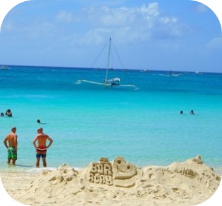
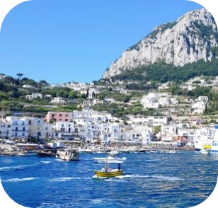

오늘의 추천 여행지
당신은 오늘 어디로 떠나고 싶나요?

보라카이
필리핀 > 보라카이는 야자수가 늘어선 해변에 새하얀 모래, 에메랄드 빛 투명 바다로 유명한 휴양지다.
11월 ~ 5월이 건기로 가장 추천되는 여행기간이다.

카프리 섬
이탈리아 남부, 나폴리만에 있는 섬이며, 올리브, 과일 따위가 나며 관광지로 유명하다. 온화한 기후를 가지고 있기 때문에 언제든 여행하기 좋다.
하와이
미국의 50번째 주로 태평양의 낙원이라 일컬어지며, 연중 온화한 날씨로 사계절 언제 방문해도 좋은 휴양지다. 단, 비가 가장 많이 내리는 11월은 피하는 것이 좋다.